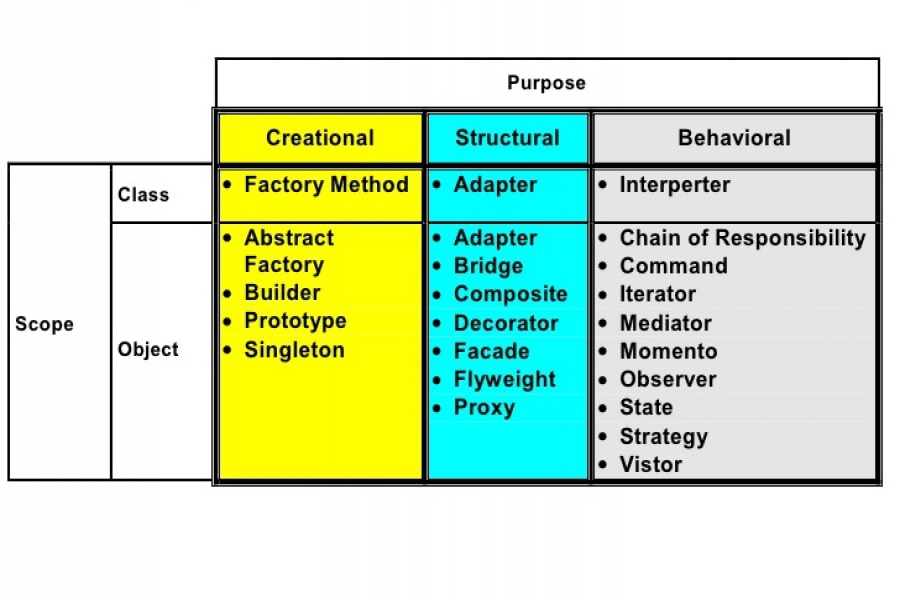

Design patterns in the context of software engineering are recurring solutions to common problems encountered in the design and implementation of software. These patterns are not templates or ready-made code but rather general guidelines to address specific issues. They encapsulate best practices, providing a structured approach to design and promoting code that is modular, maintainable, and scalable. For ICS 314, we have followed the design patterns that we have learned over the semester to create websites and applications. In using the meteor templates, we’ve learned patterns in our software development such as regularly checking dependencies and conflicts within our toolset to ensure proper working code. Another guideline that we’ve followed is providing proper documentation within our projects to ensure that users and other developers can effectively understand how to use and alter our application for their needs. Just as the templates provided, we were instructed to provide in depth guides within our github repositories that showcase the functionality and different sites of our applications such as the Contact Manager that we’ve created. Code-wise, there are other design patterns that exist within software development such as Creational Patterns, Structural Patterns and Behavioral Patterns. For example, creational patterns deal with the process of object creation, providing mechanisms to create objects in a manner suitable to the situation. Examples include the Singleton pattern, which ensures a class has only one instance, and the Factory Method pattern, which defines an interface for creating an object but lets subclasses alter the type of objects that will be created. Structural patterns focus on the composition of classes and objects. They help define how these classes and objects can be combined to form larger structures. Examples include the Adapter pattern, which allows incompatible interfaces to work together, and the Composite pattern, which composes objects into tree structures to represent part-whole hierarchies. Lastly, behavioral patterns define how objects interact and communicate. They address the delegation of responsibility between objects. Examples include the Observer pattern, where an object, known as the subject, maintains a list of dependents (observers) that are notified of any state changes, and the Strategy pattern, which defines a family of algorithms, encapsulates each one, and makes them interchangeable. Understanding and applying design patterns empower developers to write code that is not only functional but also adheres to proven architectural principles. They serve as a guide to creating software that is flexible, extensible, and easy to maintain, fostering a shared understanding of effective design practices within the software development community.